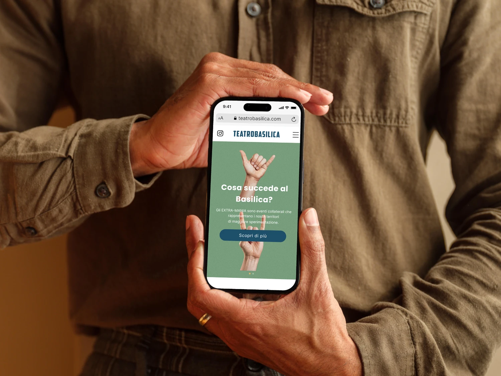
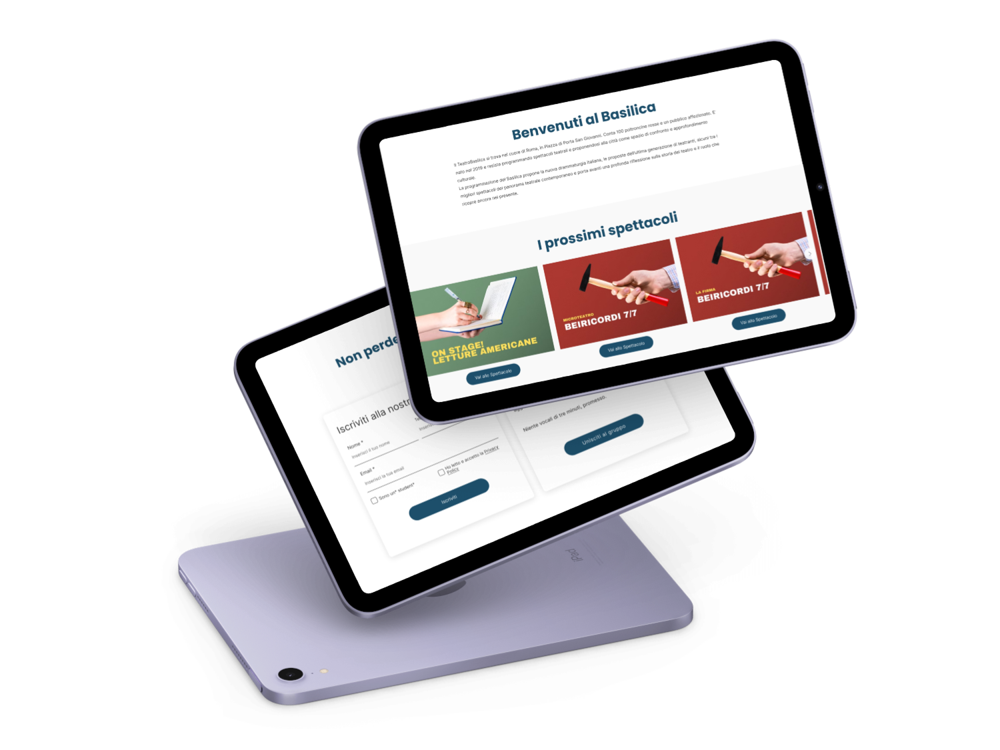

Teatro Basilica: rinnovare per coinvolgere
Un restyling strategico per avvicinare il pubblico al teatro indipendente

Il Problema: Un Teatro Invisibile
Il Teatro Basilica, realtà culturale indipendente nel cuore di Roma, aveva un sito web che non rispecchiava la qualità della loro offerta culturale. Il design obsoleto, la mancanza di funzionalità chiave e i contenuti statici creavano barriere tra il teatro e il suo pubblico, limitando le conversioni e l'engagement.
Obiettivi del Progetto
- Modernizzare l'identità digitale del teatro con un design contemporaneo
- Creare una sezione spettacoli dinamica e facilmente aggiornabile
- Semplificare il percorso verso l'acquisto dei biglietti
- Incrementare le vendite online e il tasso di conversione
- Facilitare l'accesso alle informazioni di contatto e orari
Il Mio Approccio: Analisi e Strategia
Audit del Sito Esistente
Ho iniziato analizzando il sito attuale per identificare i punti critici. Il layout era poco invitante, i contenuti erano statici e difficili da aggiornare, mancavano call-to-action strategiche e non esisteva un sistema di gestione spettacoli integrato.
Stakeholder Interview
Dialogo col cliente per mappare esigenze e priorità di business
Competitive Analysis
Analisi di siti di teatri simili per identificare pattern UX efficaci
User Testing
Test con utenti reali per validare le soluzioni implementate
Priorità Strategiche
Attraverso le discussioni con il cliente e l'analisi degli obiettivi di business, ho identificato due priorità chiave che avrebbero guidato tutte le scelte di design:
Facilitare la scoperta degli spettacoli e rendere intuitivo il percorso verso l'acquisto dei biglietti
Garantire informazioni di contatto sempre accessibili, aggiornate e complete per aumentare la fiducia
Architettura dell'Informazione
User Flow Ottimizzato
Ho progettato un flusso utente chiaro e lineare, eliminando passaggi superflui e ponendo enfasi sui percorsi principali: scoprire gli spettacoli e acquistare biglietti.
Prima e Dopo: L'Evoluzione del Sito
Il confronto tra il sito vecchio e quello nuovo evidenzia il cambiamento radicale nell'approccio visivo e funzionale. Da un layout statico e poco invitante a un'esperienza moderna, dinamica e orientata alla conversione.
La Soluzione: Design e Funzionalità
Caratteristiche Chiave

Design Moderno e Accattivante
Un look contemporaneo che rispecchia la qualità culturale del teatro

Database Dinamico
Sistema facilmente aggiornabile dal cliente tramite CMS integrato

Engagement & Retention
Sistema di newsletter per mantenere il pubblico aggiornato e coinvolto
Scelte di Design Strategiche
- Visual Hierarchy Miglirata: CTA ben visibili e percorsi utente chiari verso obiettivi di conversione
- Contenuti Aggiornabili: Il cliente può gestire autonomamente spettacoli, orari e informazioni
- Mobile-First: Design completamente responsive per garantire un'esperienza ottimale su tutti i dispositivi
- Accessibilità: Informazioni di contatto e orari sempre in primo piano per ridurre l'attrito
Mockup Finali


Risultati e Learnings
Il nuovo sito ha trasformato la presenza digitale del Teatro Basilica, offrendo un'esperienza moderna e funzionale che facilita l'engagement del pubblico e semplifica la gestione dei contenuti per il cliente.
Cosa Ho Imparato
Questo progetto mi ha insegnato l'importanza di bilanciare estetica e funzionalità, specialmente quando si lavora con realtà culturali indipendenti. Ogni scelta di design doveva essere guidata da obiettivi concreti di business, mantenendo sempre al centro l'esperienza dell'utente finale.